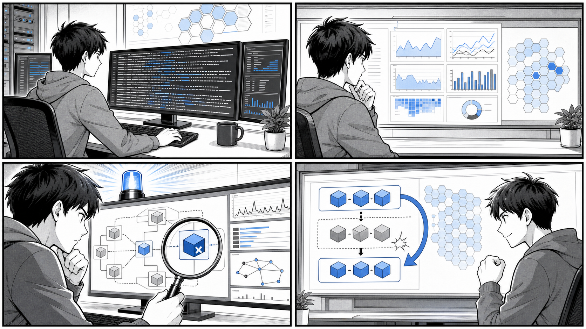

第 9 章 コンテナの運用¶

ログ、メトリクス、アラート、原因調査、ロールバックをつなげて、障害に強い運用を作ります。
はじめに¶
前章までで、Docker によるコンテナの構築・デプロイから、Kubernetes 上でのアプリケーションのパッケージングまでを学んできました。アプリケーションを「動かす」ところまではたどり着いたわけですが、ソフトウェアは作って終わりではありません。本番環境で稼働し続けるアプリケーションには、その状態を観測し（オブザーバビリティ）、障害やアクセス増加に耐え続ける（可用性）ための運用設計が欠かせません。
「変更を楽に安全にできて役に立つソフトウェア」であり続けるためには、稼働中のシステムから何が起きているのかを把握できることと、一部が壊れても全体としてサービスが止まらないことの両方が必要です。この章では、その土台となる以下の 2 つのテーマを扱います。
- 9.1 ロギングの運用 — コンテナのログをどこに出し、どう集約し、どう検索可能にするか
- 9.2 可用性の高い Kubernetes の運用 — オートスケールと Pod 配置制御によって、負荷変動と障害に強い構成をどう作るか
なお、本章で引用するマニフェストや設定ファイルは、すべてリポジトリ内に実在するものです。ロギングの題材は gihyo-docker-kuberbetes/ch08/ch08_1_3（Docker Compose 構成）と ch08/ch08_1_4（Kubernetes 構成）、可用性の題材は ch08/ch08_3_2、アプリ側のログ出力例は apps/taskapp/containers/ 配下を参照します。実コードに存在しない一般的な観点については「例」「一般論」として明記します。
目次¶
ロギングの運用¶
コンテナは標準出力・標準エラーにログを出す¶
ログ運用を考えるうえで、まず押さえるべき原則があります。それは 「コンテナは標準出力（stdout）・標準エラー出力（stderr）にログを出す」 ということです。
従来のアプリケーションは、ログを /var/log/app.log のようなファイルに書き込むのが一般的でした。しかしコンテナはイミュータブル（不変）であることが望ましく、いつ破棄・再作成されてもよい存在です。コンテナの内部にログファイルを書き込んでしまうと、コンテナが破棄された瞬間にログも失われてしまいます。
そこでコンテナの世界では、アプリケーションは「ログを標準出力・標準エラーに垂れ流すだけ」にし、それをどこに保存・転送するかはコンテナの外側（Docker エンジンや Kubernetes）の責務とする、という役割分担を取ります。これは The Twelve-Factor App が説く「ログをイベントストリームとして扱う」という考え方そのものです。アプリケーションはログの行き先を知らなくてよく、関心の分離が実現されます。
この原則は、アプリケーション側の設定にも現れます。たとえば apps/taskapp/containers/nginx-web/etc/nginx/templates/10-log.conf.template では、Nginx のアクセスログを構造化された JSON 形式で出力するよう定義しています。
log_format json escape=json '{'
'"time": "$time_local",'
'"remote_addr": "$remote_addr",'
'"host": "$host",'
'"remote_user": "$remote_user",'
'"status": "$status",'
'"server_protocol": "$server_protocol",'
'"request_method": "$request_method",'
'"request_uri": "$request_uri",'
'"request": "$request",'
'"body_bytes_sent": "$body_bytes_sent",'
'"request_time": "$request_time",'
'"upstream_response_time": "$upstream_response_time",'
'"http_referer": "$http_referer", '
'"http_user_agent": "$http_user_agent",'
'"http_x_forwarded_for": "$http_x_forwarded_for",'
'"http_x_forwarded_proto": "$http_x_forwarded_proto"'
'}';
JSON 形式でログを出力しておくと、後述する Elasticsearch のようなログ基盤がフィールド単位でインデックスを作れるため、「ステータスコードが 500 のリクエストだけ」「レスポンスタイムが 1 秒を超えたものだけ」といった検索・集計が容易になります。プレーンテキストのログと比べ、構造化ログは検索性・分析性で大きく勝ります。
データベースのようなミドルウェアでも、診断に必要なログをあらかじめ出力させておくことが重要です。apps/taskapp/containers/mysql/etc/mysql/conf.d/slowlog.cnf では、実行に時間のかかったクエリを記録するスロークエリログを有効化しています。
[mysqld]
slow_query_log = on
slow_query_log_file = /var/log/mysql/mysql-slow.log
long_query_time = 1
log_queries_not_using_indexes = on
ここでは 1 秒（long_query_time = 1）を超えたクエリと、インデックスを使っていないクエリを記録対象としています。このようなログは、パフォーマンス劣化の原因を運用フェーズで特定するための貴重な手がかりになります。
Docker のロギングドライバ¶
標準出力・標準エラーに出されたログを、Docker は ロギングドライバ（logging driver） という仕組みで処理します。デフォルトは json-file ドライバで、ホスト上の JSON ファイルにログを蓄積し、docker container logs コマンドで参照できるようにします。
ロギングドライバはこの json-file 以外にも複数用意されており、ログの転送先を切り替えられます。代表的なものには次のようなものがあります（一般論）。
json-file— ホスト上の JSON ファイルに保存（デフォルト）syslog— syslog デーモンへ転送journald— systemd の journal へ転送fluentd— Fluentd へ転送awslogs— Amazon CloudWatch Logs へ転送
fluentd ドライバを使うと、各コンテナの標準出力を Fluentd（ログコレクタ）へ送り、そこから任意のストレージへ集約できます。gihyo-docker-kuberbetes/ch08/ch08_1_3/docker-compose.yml は、まさにこの構成を Docker Compose で組んだ例です。
version: "3"
services:
elasticsearch:
image: elasticsearch:5.6-alpine
ports:
- "9200:9200"
volumes:
- "./jvm.options:/usr/share/elasticsearch/config/jvm.options"
kibana:
image: kibana:5.6
ports:
- "5601:5601"
environment:
ELASTICSEARCH_URL: "http://elasticsearch:9200"
depends_on:
- elasticsearch
fluentd:
build: ./fluentd-elasticsearch
ports:
- "24224:24224"
- "24220:24220"
- "24224:24224/udp"
depends_on:
- elasticsearch
echo:
image: gihyodocker/echo:latest
ports:
- "8080:8080"
logging:
driver: "fluentd"
options:
fluentd-address: "localhost:24224"
tag: "docker.{{.Name}}"
depends_on:
- fluentd
注目すべきは echo サービスの logging セクションです。driver: "fluentd" を指定することで、echo コンテナの標準出力は Fluentd（localhost:24224）へ転送されます。tag: "docker.{{.Name}}" は、ログにコンテナ名由来のタグを付与する指定で、後段の Fluentd 側でこのタグを使って振り分けや出力先の決定を行います。
この構成では、ログは次のように流れます。
echo（標準出力） → fluentd（収集） → elasticsearch（蓄積・検索） → kibana（可視化）
つまり Elasticsearch にログを蓄積し、Kibana という Web UI で検索・可視化する、という流れです。この Elasticsearch + Fluentd + Kibana の組み合わせは、頭文字を取って EFK スタック と呼ばれ、コンテナのログ集約における定番構成です。
Fluentd の入力・出力設定¶
Fluentd の振る舞いは設定ファイル fluent.conf で決まります。ch08/ch08_1_3/fluentd-elasticsearch/fluent.conf を見てみましょう。
<source>
@type forward
port 24224
bind 0.0.0.0
</source>
<match *.**>
@type copy
<store>
type elasticsearch
host elasticsearch
port 9200
logstash_format true
logstash_prefix docker
logstash_dateformat %Y%m%d
include_tag_key true
type_name app
tag_key @log_name
flush_interval 5s
</store>
<store>
type file
path /fluentd/log/docker_app
</store>
</match>
<source>
@type monitor_agent
bind 0.0.0.0
port 24220
</source>
Fluentd の設定は、大きく 入力（source） と 出力（match） の 2 つから構成されます。
- 入力（
<source>） —@type forwardは Fluentd の forward プロトコルで他のコンテナからログを受け取る入力プラグインです。port 24224で待ち受けており、Docker Compose 側でfluentd-address: "localhost:24224"と指定した宛先と一致します。 - 出力（
<match *.**>） —*.**というパターンに一致するすべてのタグのログを処理対象とします。@type copyは受け取ったログを複数の出力先に複製するプラグインで、ここでは 2 つの<store>を定義しています。1 つ目は Elasticsearch（type elasticsearch、host elasticsearch、port 9200）への出力で、logstash_format trueにより Kibana が扱いやすい日付別インデックス（docker-YYYYMMDD形式）が作られます。2 つ目はファイル（type file）への出力で、ローカルにもログを残しています。 - モニタリング（2 つ目の
<source>） —@type monitor_agentは Fluentd 自身の稼働状況を監視するためのエンドポイントをport 24220で公開します。ログ基盤そのものを監視できるようにしておく配慮です。
この Fluentd イメージは、fluent.conf を組み込んだカスタムイメージとしてビルドされます。ch08/ch08_1_3/fluentd-elasticsearch/Dockerfile は次のとおりです。
FROM fluent/fluentd:v0.12-debian
RUN ["gem", "install", "fluent-plugin-elasticsearch", "--no-rdoc", "--no-ri", "--version", "1.9.2"]
COPY fluent.conf /fluentd/etc/fluent.conf
公式の Fluentd イメージに Elasticsearch 出力プラグイン（fluent-plugin-elasticsearch）を追加インストールし、自作の fluent.conf をコピーするだけの簡潔な内容です。Fluentd は標準ではすべての出力プラグインを同梱しないため、必要なプラグインを明示的に追加するこのパターンはよく使われます。
Kubernetes でのログ集約パターン（EFK + DaemonSet）¶
Docker Compose では logging ドライバでコンテナごとに転送先を指定しましたが、Kubernetes では発想が少し変わります。Kubernetes では多数のノード（Node）の上に多数の Pod が分散して動くため、「各ノードに 1 つだけログ収集役を常駐させ、そのノード上の全コンテナのログをまとめて集める」 というパターンが主流です。
この「各ノードに 1 つだけ Pod を配置する」を実現するのが DaemonSet です。Deployment がレプリカ数を指定して Pod を配置するのに対し、DaemonSet はクラスタの各ノードに自動的に Pod を 1 つずつ配置します。ログ収集のように、すべてのノードでバックグラウンドのエージェントを動かしたいケースにぴったりの仕組みです。
ch08/ch08_1_4/fluentd-daemonset.yaml が、Fluentd を DaemonSet としてデプロイするマニフェストです。
apiVersion: apps/v1
kind: DaemonSet
metadata:
name: fluentd
namespace: kube-system
labels:
app: fluentd-logging
version: v1
kubernetes.io/cluster-service: "true"
spec:
selector:
matchLabels:
app: fluentd-logging
template:
metadata:
labels:
app: fluentd-logging
version: v1
kubernetes.io/cluster-service: "true"
spec:
tolerations:
- key: node-role.kubernetes.io/master
effect: NoSchedule
containers:
- name: fluentd
image: fluent/fluentd-kubernetes-daemonset:elasticsearch
env:
- name: FLUENT_ELASTICSEARCH_HOST
value: "elasticsearch"
- name: FLUENT_ELASTICSEARCH_PORT
value: "9200"
- name: FLUENT_ELASTICSEARCH_SCHEME
value: "http"
resources:
limits:
memory: 200Mi
requests:
cpu: 100m
memory: 200Mi
volumeMounts:
- name: varlog
mountPath: /var/log
- name: varlibdockercontainers
mountPath: /var/lib/docker/containers
readOnly: true
terminationGracePeriodSeconds: 30
volumes:
- name: varlog
hostPath:
path: /var/log
- name: varlibdockercontainers
hostPath:
path: /var/lib/docker/containers
readOnly: true
このマニフェストの要点を整理します。
kind: DaemonSet— 各ノードに Fluentd を 1 つずつ常駐させます。namespace: kube-systemに配置しているのは、これがクラスタの基盤機能（cluster-service）であることを示しています。hostPathボリューム —varlog（/var/log）とvarlibdockercontainers（/var/lib/docker/containers）という 2 つのホストパスをマウントしています。Kubernetes 上の各コンテナの標準出力は、ノード上のこれらのディレクトリにファイルとして書き出されます。Fluentd はこのホストのログファイルを読み取ることで、ノード上の全コンテナのログを収集できます。後者はreadOnly: trueで読み取り専用にしており、ログ基盤がアプリのログを書き換えないよう配慮されています。- 環境変数で転送先を指定 —
FLUENT_ELASTICSEARCH_HOSTなどで Elasticsearch の宛先を渡しています。fluent/fluentd-kubernetes-daemonset:elasticsearchイメージは、これらの環境変数を読んで Elasticsearch へ出力するよう作られているため、Compose の例のように自前でfluent.confを書かなくても動きます。 tolerations—node-role.kubernetes.io/masterのNoScheduleを許容（toleration）しています。通常 master ノードには一般の Pod が配置されませんが、ログ収集はそこでも動かしたいため、この taint を許容してマスターノードにも Fluentd を配置できるようにしています。resources— メモリの上限（limits）と CPU・メモリの要求（requests）を明示しています。基盤コンポーネントが暴走してノードのリソースを食い潰さないようにする、運用上重要な指定です。
収集先となる Elasticsearch も Kubernetes 上にデプロイします。ch08/ch08_1_4/elasticsearch.yaml では、PersistentVolumeClaim・Service・Deployment・ConfigMap をまとめて定義しています。データの永続化と設定の外出しに注目してください。
kind: PersistentVolumeClaim
apiVersion: v1
metadata:
name: elasticsearch-pvc
namespace: kube-system
labels:
kubernetes.io/cluster-service: "true"
spec:
accessModes:
- ReadWriteOnce
resources:
requests:
storage: 2G
---
apiVersion: v1
kind: Service
metadata:
name: elasticsearch
namespace: kube-system
spec:
selector:
app: elasticsearch
ports:
- protocol: TCP
port: 9200
targetPort: http
ログは蓄積されていくデータなので、Pod が再作成されても消えないよう PersistentVolumeClaim（PVC） で永続ボリュームを要求しています。また Elasticsearch の設定（elasticsearch.yml、jvm.options など）は ConfigMap として定義し、コンテナにマウントしています（マニフェスト後半で定義）。設定をイメージに焼き込まず外部化することで、設定変更のたびにイメージを作り直す必要がなくなります。
最後に、ログを人間が見るための窓口が Kibana です。ch08/ch08_1_4/kibana.yaml では、Service を NodePort で公開しています。
apiVersion: v1
kind: Service
metadata:
name: kibana
namespace: kube-system
spec:
selector:
app: kibana
ports:
- protocol: TCP
port: 5601
targetPort: http
nodePort: 30050
type: NodePort
type: NodePort と nodePort: 30050 により、クラスタ外からノードのポート 30050 経由で Kibana の Web UI（コンテナ内ポート 5601）にアクセスできます。ブラウザで Kibana を開けば、Fluentd が Elasticsearch に蓄積したログを検索・可視化できます。
ここまでをまとめると、Kubernetes における EFK によるログ集約は次の流れになります。
各 Pod（標準出力）
→ ノードの /var/log ・ /var/lib/docker/containers にファイル出力
→ Fluentd DaemonSet が各ノードで収集
→ Elasticsearch に蓄積・インデックス化
→ Kibana で検索・可視化
ログ収集を担う echo アプリ自体も Deployment として動かせます。ch08/ch08_1_4/echo.yaml では、Nginx と echo の 2 コンテナを 1 つの Pod にまとめ、Nginx 側の環境変数 LOG_STDOUT: "true" でログを標準出力に出すよう指定しています。アプリ側が原則どおり標準出力にログを出すことで、上記のパイプラインに自然に乗るわけです。
可用性の高い Kubernetes の運用¶
ログによって「何が起きているか」を観測できるようになったら、次は「壊れても・混んでも止まらない」可用性の高い運用です。Kubernetes には、可用性を支える仕組みが標準で備わっています。ここでは、負荷に応じた オートスケール（HPA） と、Pod をどのノードに配置するかを制御する アフィニティ（affinity） を中心に見ていきます。
HPA によるオートスケール¶
アクセス数は時間帯やイベントによって大きく変動します。常にピークに合わせた数の Pod を動かしておくのはコストの無駄ですし、逆にアクセス急増に Pod 数が足りなければサービスが遅延・停止してしまいます。そこで、負荷に応じて自動的に Pod 数を増減させるのが HorizontalPodAutoscaler（HPA） です。
ch08/ch08_3_2/hpa.yaml は、echo という Deployment に対する HPA の定義です。
apiVersion: autoscaling/v2beta1
kind: HorizontalPodAutoscaler
metadata:
name: echo
spec:
scaleTargetRef:
apiVersion: apps/v1
kind: Deployment
name: echo
minReplicas: 1
maxReplicas: 3
metrics:
- type: Resource
resource:
name: cpu
targetAverageUtilization: 40
このマニフェストは次のことを意味します。
scaleTargetRef— スケール対象はechoという名前の Deployment です。HPA はこの Deployment のレプリカ数を書き換えることでスケールを実現します。minReplicas: 1/maxReplicas: 3— Pod 数を最小 1、最大 3 の範囲で増減させます。metrics— スケールの判断基準です。ここでは CPU 使用率（name: cpu）を見ており、targetAverageUtilization: 40は「Pod 全体の平均 CPU 使用率を 40% に保つ」という目標を表します。実際の平均使用率が 40% を上回れば Pod を増やし、下回れば（最小数まで）減らします。
つまり HPA は、設定したメトリクスの目標値を維持するように Pod 数を自動調整するコントローラです。これにより、アクセス急増時には自動でスケールアウトしてサービスを守り、平常時には Pod を減らしてリソースを節約できます。
なお、HPA が CPU 使用率を取得するには、クラスタにメトリクスの収集基盤（Metrics Server など）が導入されている必要があります（一般論）。HPA そのものはあくまで「メトリクスを見てレプリカ数を決める」役割であり、メトリクスの提供は別のコンポーネントが担う、という分担になっています。
アフィニティによる Pod 配置制御¶
Pod がどのノードに配置されるかは、通常は Kubernetes のスケジューラが自動で決めます。しかし可用性やパフォーマンスの観点から、「この Pod は特定の性質を持つノードで動かしたい」「同じ役割の Pod は別々のノードに散らしたい」といった配置の意図を持ち込みたいことがあります。これを実現するのが アフィニティ（affinity） です。
Node Affinity — 特定のノードへ配置する¶
Node Affinity は、Pod を特定のラベルを持つノードに配置するための仕組みです。ch08/ch08_3_2/node-affinity-deployment.yaml を見てみましょう。
apiVersion: apps/v1
kind: Deployment
metadata:
name: high-cpu-job
labels:
app: high-cpu-job
spec:
replicas: 2
selector:
matchLabels:
app: high-cpu-job
template:
metadata:
labels:
app: high-cpu-job
spec:
affinity:
nodeAffinity:
requiredDuringSchedulingIgnoredDuringExecution:
nodeSelectorTerms:
- matchExpressions:
- key: instancegroup
operator: In
values:
- "batch"
containers:
- name: high-cpu-job
image: example/high-cpu-job:latest
nodeAffinity の下にある requiredDuringSchedulingIgnoredDuringExecution は、「スケジューリング時に必須（required）の条件」を表します。ここでは instancegroup というラベルの値が batch であるノードにのみ、この high-cpu-job Pod を配置せよ、と指定しています。
これは、CPU を大量に消費するバッチ処理を、Web リクエストを捌くノードとは別の「バッチ用ノード群」に隔離したい、といったケースで有効です。負荷特性の異なるワークロードを分離することで、互いに干渉してサービス品質が下がるのを防げます。
なお、条件の強さには required...（必須・満たさなければ配置されない）のほかに preferred...（できれば満たしたい・満たせなくても配置される）という種類もあります（一般論）。要件に応じて使い分けます。
Pod Anti-Affinity — Pod を別々のノードに散らす¶
可用性を高めるうえで特に重要なのが Pod Anti-Affinity（Pod 反アフィニティ） です。同じ役割の Pod が偶然同じノードに固まってしまうと、そのノードが故障した瞬間にすべての Pod が同時に失われ、サービスが停止してしまいます。Pod Anti-Affinity は「同じ種類の Pod を別々のノードに分散配置する」ことで、この単一ノード障害の影響を抑えます。
ch08/ch08_3_2/pod-affinity-deployment.yaml がその例です。
apiVersion: apps/v1
kind: Deployment
metadata:
name: echo
labels:
app: echo
spec:
replicas: 3
selector:
matchLabels:
app: echo
template:
metadata:
labels:
app: echo
spec:
affinity:
podAntiAffinity:
requiredDuringSchedulingIgnoredDuringExecution:
- labelSelector:
matchExpressions:
- key: app
operator: In
values:
- echo
topologyKey: "kubernetes.io/hostname"
containers:
- name: nginx
image: gihyodocker/nginx:latest
env:
- name: BACKEND_HOST
value: localhost:8080
ports:
- containerPort: 80
- name: echo
image: gihyodocker/echo:latest
ports:
- containerPort: 8080
ポイントは podAntiAffinity の設定です。labelSelector で「app: echo というラベルを持つ Pod」を対象とし、topologyKey: "kubernetes.io/hostname" を指定しています。topologyKey はノードを区別する単位を表し、kubernetes.io/hostname はノードのホスト名（＝ノード個体）を意味します。
これらを組み合わせると、「app: echo の Pod は、同じホスト名のノードに 2 つ以上は置かない」という制約になります。replicas: 3 で 3 つの echo Pod を起動する際、Kubernetes はこの制約を満たすよう、3 つの Pod をそれぞれ別のノードへ配置しようとします。結果として、1 つのノードが落ちても残りのノードの Pod でサービスが継続でき、可用性が向上します。
可用性のためのその他の観点（一般論）¶
HPA とアフィニティ以外にも、可用性を高めるための定石となる仕組みがいくつかあります。本リポジトリの ch08_3_2 のマニフェストには直接含まれていないため、ここでは一般論・例として概要を紹介します。実際の運用では、これらを組み合わせて多層的に可用性を確保します。
-
複数レプリカ — そもそも Deployment のレプリカ数を 2 以上にしておくことが可用性の基本です。前掲の
pod-affinity-deployment.yamlはreplicas: 3であり、Anti-Affinity と組み合わせて「3 つの Pod を別々のノードに分散」させています。レプリカが 1 つだけだと、その Pod の再起動中はサービスが完全に止まってしまいます。 -
PodDisruptionBudget（PDB） — ノードのメンテナンスやクラスタのアップグレードといった「計画的な中断」の際に、同時に停止してよい Pod 数（あるいは最低限維持すべき Pod 数）に上限・下限を設ける仕組みです。たとえば「常に最低 2 つの Pod を稼働させる」と宣言しておけば、メンテナンスで一度に全 Pod が落とされる事態を防げます（例）。
# 例: PodDisruptionBudget の概要（一般論）
apiVersion: policy/v1
kind: PodDisruptionBudget
metadata:
name: echo-pdb
spec:
minAvailable: 2
selector:
matchLabels:
app: echo
-
リソースの requests / limits — 各コンテナに必要なリソース量（
requests）と上限（limits）を宣言します。requestsはスケジューラが Pod を配置する際の判断材料となり、リソースに余裕のあるノードへ適切に配置されます。limitsは 1 つのコンテナがノードのリソースを食い潰して他の Pod を巻き込む「うるさい隣人（noisy neighbor）」問題を防ぎます。前掲のfluentd-daemonset.yamlでもrequests・limitsが指定されていました。 -
ヘルスチェック（liveness / readiness probe） — Kubernetes に「Pod が正常か」「リクエストを受けられる状態か」を判定させる仕組みです。
livenessProbeが失敗するとコンテナが再起動され、readinessProbeが失敗している間はその Pod へトラフィックが流されなくなります。これにより、応答不能になった Pod を自動で復旧・切り離しでき、ユーザーが障害中の Pod に当たるのを防げます（例）。
# 例: liveness / readiness probe の概要（一般論）
livenessProbe:
httpGet:
path: /healthz
port: 8080
initialDelaySeconds: 10
periodSeconds: 10
readinessProbe:
httpGet:
path: /readiness
port: 8080
initialDelaySeconds: 5
periodSeconds: 5
これらの仕組みは、いずれも「一部が壊れても全体は止まらない」という可用性の本質を、宣言的なマニフェストで実現するものです。Kubernetes は、こうした宣言された望ましい状態（desired state）を維持し続けるよう自動で働きます。運用者は「どうあってほしいか」を宣言するだけでよく、そのための個別操作を手で行う必要がありません。これこそが、Kubernetes が「変更を楽に安全にできる」運用基盤たりうる理由です。
まとめ¶
この章では、コンテナを本番で運用し続けるための 2 つの柱、ロギングと可用性について学びました。
- ロギングの運用
- コンテナは標準出力・標準エラーにログを出すのが原則であり、保存・転送はコンテナの外側（Docker・Kubernetes）の責務とする。
- アプリ側では構造化ログ（
nginx-webの JSON ログ）や診断ログ（mysqlのスロークエリログ）を出力しておくと、後段の分析が容易になる。 - Docker のロギングドライバ（
fluentdドライバ）でログを Fluentd に転送し、ch08_1_3の Compose 構成では Elasticsearch + Fluentd + Kibana の EFK スタック を組んだ。fluent.confの<source>（入力）と<match>（出力）で収集と転送先を定義する。 -
Kubernetes では
ch08_1_4のように、各ノードに Fluentd を常駐させる DaemonSet でノード上の全コンテナのログを集約し、Elasticsearch に蓄積、Kibana（NodePort）で可視化する。 -
可用性の高い Kubernetes の運用
- HPA（
hpa.yaml）は CPU 使用率などのメトリクスに応じて Pod 数を自動増減させ、負荷変動に追従する。 - Node Affinity（
node-affinity-deployment.yaml）は Pod を特定の性質を持つノードに配置し、ワークロードを隔離する。 - Pod Anti-Affinity（
pod-affinity-deployment.yaml）は同種の Pod を別々のノードに分散させ、単一ノード障害の影響を抑える。 - さらに一般論として、複数レプリカ・PodDisruptionBudget・リソースの requests/limits・ヘルスチェックを組み合わせることで、多層的に可用性を確保する。
ログによってシステムの内部を観測でき、オートスケールとアフィニティによって負荷と障害に耐えられる構成を宣言的に組めること。これらは「変更を楽に安全にできて役に立つソフトウェア」を本番で維持し続けるための土台です。
次章では、運用負荷とリスクをさらに下げるために、コンテナイメージそのものを最適化・セキュア化する方法を扱います。